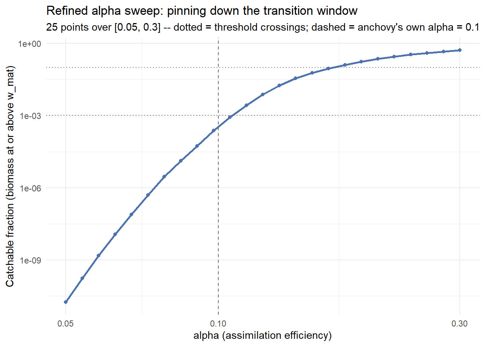
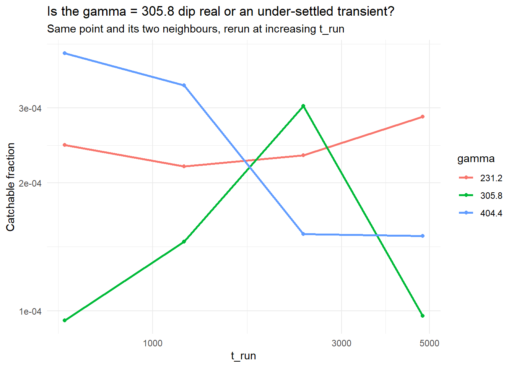
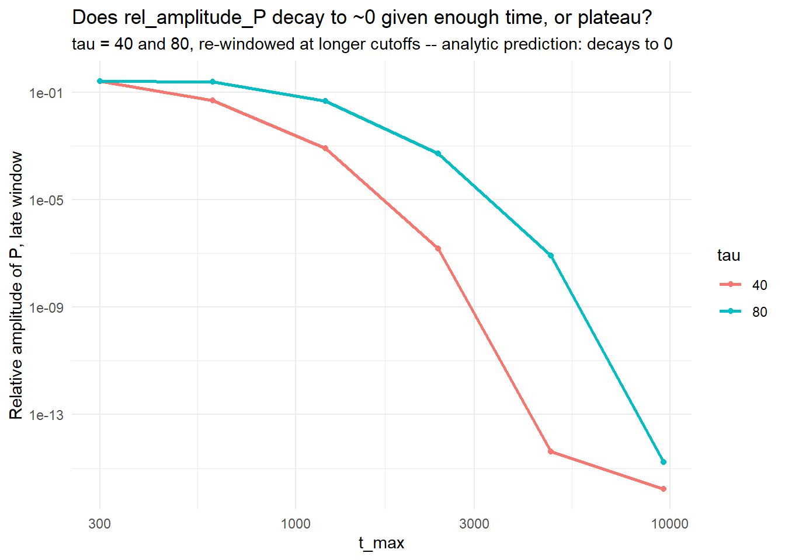
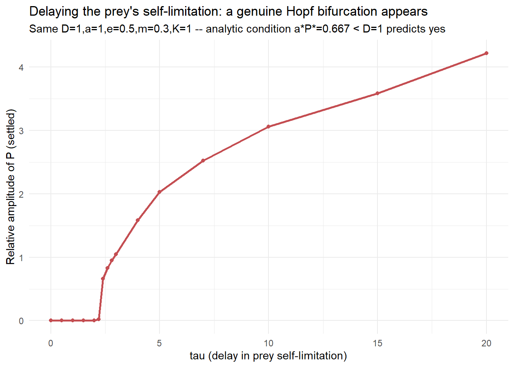
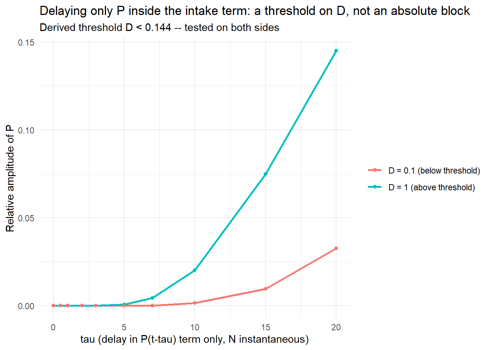

Code
library(mizer)
library(patchwork)
library(reshape2)
library(plotly)
library(dplyr)
library(mizerExperimental)
library(tidyverse)
library(glue)
library(ggplot2)
library(colorRamps)
library(future)
library(scales)
library(deSolve)Samia
July 13, 2026
Day 25 closed the juvenile-pileup sweep and ruled out a Hopf bifurcation for the time-delay predator-prey model, but left three threads open: pin down \(\alpha\)’s transition window, check whether the \(\gamma=305.8\) dip was real or a transient, and confirm the \(\tau=40/80\) amplitude climb actually decays to zero. All three are closed today, in 26_experiments.R. A further question ( if delay usually destabilises systems, why couldn’t it here? ) led to re-deriving the Hopf condition for two other places the delay could sit, one of which does produce one.
Same anchovy builder and the same catchable_fraction_at()/run_param_sweep() pair from Day 25, carried over unchanged so today’s refinements are directly comparable to the sweeps that found the transition and the dip in the first place:
make_second_order_params_kr <- function(lambda = 2.05, resource_decrease = 0.001,
capacity_mult = 1, second_order = TRUE,
ext_diff = 0.00, alpha = 0.1, gamma = 750,
ks = 0, kappa_override = NULL) {
a0 <- 100
kappa <- if (is.null(kappa_override)) a0 * exp(-6.9 * (lambda - 1)) else kappa_override
no_w <- round(log(66.5 / 0.0003) / 0.1)
params <- newSingleSpeciesParams(
species_name = "Anchovy",
w_min = 0.0003, w_max = 66.5, w_mat = 10,
no_w = no_w, lambda = lambda, kappa = kappa,
alpha = alpha, gamma = gamma, ks = ks
)
given_species_params(params)$D_ext <- ext_diff
params <- setBevertonHolt(params)
default_capacity <- getResourceCapacity(params)
r <- getResourceRate(params) * resource_decrease
cc <- default_capacity * capacity_mult
params <- setResource(params, resource_rate = r, resource_capacity = cc,
resource_dynamics = "resource_semichemostat",
balance = FALSE)
if (second_order) {
second_order_w(params) <- c(flux = "centred", bin_average = TRUE)
}
params
}
catchable_fraction_at <- function(params, t_max = 600) {
sim <- project(params, t_max = t_max, dt = 0.1, t_save = 0.5,
progress_bar = FALSE, effort = 0, method = "tr_bdf2")
last <- dim(sim@n)[1]
w_mat <- params@species_params$w_mat[1]
w <- sim@params@w
dw <- sim@params@dw
bm_density <- sim@n[last, 1, ] * w * dw
total_bm <- sum(bm_density)
catchable_bm <- sum(bm_density[w >= w_mat])
data.frame(catchable_fraction = catchable_bm / total_bm, error = NA_character_)
}
run_param_sweep <- function(param_name, param_seq, capacity_mult = 10,
resource_decrease = 0.001, t_max = 600) {
bind_rows(lapply(param_seq, function(v) {
args <- list(capacity_mult = capacity_mult, resource_decrease = resource_decrease)
args[[param_name]] <- v
result <- tryCatch({
p <- do.call(make_second_order_params_kr, args)
catchable_fraction_at(p, t_max = t_max)
}, error = function(e) {
data.frame(catchable_fraction = NA_real_, error = conditionMessage(e))
})
if (!is.na(result$error)) {
warning(sprintf("%s = %.4g: %s", param_name, v, result$error))
}
data.frame(param = param_name, value = v,
catchable_fraction = result$catchable_fraction,
error = result$error)
}))
}Day 25’s 15-point \(\alpha\) sweep found the catchable fraction jumps roughly 8 orders of magnitude between \(\alpha=0.057\) and \(\alpha=0.28\), but the grid wasn’t dense enough to say where the steep part starts and ends. Same move as Day 24’s capacity_mult refinement: 25 log-spaced points zoomed into \([0.05, 0.3]\), at the same t_run = 600 for direct comparability.
Unlike capacity_mult’s collapse bifurcation, there’s no natural alive/dead split here. catchable_fraction rises smoothly from near-zero to a plateau, not a bistable jump. So the window is bracketed with two threshold crossings: where the climb clearly starts (under 0.1%) and where it’s clearly finished (over 10%):
find_crossing <- function(df, threshold, value_col = "value",
metric_col = "catchable_fraction") {
df <- df %>% arrange(.data[[value_col]])
below <- df %>% filter(.data[[metric_col]] < threshold) %>% pull(.data[[value_col]])
above <- df %>% filter(.data[[metric_col]] >= threshold) %>% pull(.data[[value_col]])
data.frame(
threshold = threshold,
below_last = if (length(below) > 0) max(below) else NA_real_,
above_first = if (length(above) > 0) min(above) else NA_real_
)
}
LOW_THRESHOLD <- 1e-3
HIGH_THRESHOLD <- 0.10
alpha_crossings <- bind_rows(
find_crossing(alpha_refine_df %>% filter(is.na(error)), LOW_THRESHOLD) %>% mutate(edge = "climb starts"),
find_crossing(alpha_refine_df %>% filter(is.na(error)), HIGH_THRESHOLD) %>% mutate(edge = "climb ends")
)ggplot(alpha_refine_df %>% filter(is.na(error)), aes(x = value, y = catchable_fraction)) +
geom_line(color = "#4C72B0", linewidth = 1) +
geom_point(color = "#4C72B0", size = 1.5) +
geom_hline(yintercept = c(LOW_THRESHOLD, HIGH_THRESHOLD), linetype = "dotted", color = "grey40") +
geom_vline(xintercept = 0.1, linetype = "dashed", color = "grey40") +
scale_y_log10(labels = scales::label_scientific()) +
scale_x_log10() +
labs(x = "alpha (assimilation efficiency)", y = "Catchable fraction (biomass at or above w_mat)",
title = "Refined alpha sweep: pinning down the transition window",
subtitle = "25 points over [0.05, 0.3] -- dotted = threshold crossings; dashed = anchovy's own alpha = 0.1") +
theme_minimal()
The steep part of the climb is compressed into a narrow window, \(\alpha \approx 0.105\text{–}0.178\) which is much tighter than Day 25’s coarse “0.057 to 0.28.” The anchovy’s own \(\alpha = 0.1\) sits at \(0.0237\%\) catchable fraction, just below the 0.1% “climb starts” threshold. This confirms Day 25’s “foot of the climb” read with an actual number.
Day 25’s 15-point \(\gamma\) sweep found one point breaking monotonicity. This code block reruns that point and its neighbours (located dynamically off the original grid) at increasingly long t_run.
gamma_full_seq <- exp(seq(log(100), log(5000), length.out = 15))
dip_idx <- which.min(abs(gamma_full_seq - 305.8))
neighbour_idx <- unique(pmax(1, pmin(length(gamma_full_seq), c(dip_idx - 1, dip_idx, dip_idx + 1))))
gamma_check_vals <- gamma_full_seq[neighbour_idx]
t_run_check_seq <- c(600, 1200, 2400, 4800)
gamma_dip_check_df <- bind_rows(lapply(t_run_check_seq, function(tr) {
bind_rows(lapply(gamma_check_vals, function(g) {
p <- make_second_order_params_kr(gamma = g, capacity_mult = 10, resource_decrease = 0.001)
res <- catchable_fraction_at(p, t_max = tr)
data.frame(gamma = g, t_run = tr, catchable_fraction = res$catchable_fraction)
}))
}))
dip_persistence <- gamma_dip_check_df %>%
group_by(t_run) %>%
arrange(gamma, .by_group = TRUE) %>%
summarise(
dip_still_present = catchable_fraction[2] < catchable_fraction[1] &
catchable_fraction[2] < catchable_fraction[3],
.groups = "drop"
)ggplot(gamma_dip_check_df, aes(x = t_run, y = catchable_fraction, color = factor(round(gamma, 1)))) +
geom_line(linewidth = 1) +
geom_point(size = 1.5) +
scale_x_log10() +
scale_y_log10(labels = scales::label_scientific()) +
labs(x = "t_run", y = "Catchable fraction",
title = "Is the gamma = 305.8 dip real or an under-settled transient?",
subtitle = "Same point and its two neighbours, rerun at increasing t_run", color = "gamma") +
theme_minimal()
This isn’t “the dip shrinks and disappears” (critical slowing down) or “the dip holds steady” (a real feature) - it flips non-monotonically, and at t_run = 2400 the ordering of all three points scrambles, not just the middle one. That’s not what a converging transient looks like.
The likely explanation: catchable_fraction_at() reads a single snapshot at the last saved timestep, not an average over a settled window. If the system at this operating point (capacity_mult = 10, resource_decrease = 0.001, the fixed baseline every juvenile-pileup sweep since Day 24 has used) is still gently oscillating rather than sitting at a true fixed point, varying t_max just samples different phases, not different amounts of settling time, which is consistent with Day 23’s refined \([3,10]\) grid finding a reversal from fixed-point to oscillating right around capacity_mult = 10. That noise floor (values bouncing 2–3x between reruns) is negligible next to \(\alpha\)’s 27.5-order-of-magnitude range, but comparable to or larger than \(\gamma\)’s and \(\kappa\)’s entire reported ranges, so those “flat”/“modest effect” Day 25 conclusions may be sampling noise rather than a real parameter effect. Checking directly whether this operating point is actually oscillating is the natural follow-up.
Day 25’s time-delay model (delay on the predator’s conversion of intake into biomass) was proven analytically to never support a Hopf bifurcation, but rel_amplitude_P was still climbing with \(\tau\) across the tested range (up to 0.25 at \(\tau=40\)), which the algebra says must eventually decay rather than plateau. Reproducing Day 25’s model first to confirm the base case, then extending t_max well past the original 300:
predator_prey_params_delay <- list(D = 1, a = 1, e = 0.5, m = 0.3, K = 1)
check_hopf_feasibility <- function(parms = predator_prey_params_delay) {
D <- parms$D; a <- parms$a; e <- parms$e; m <- parms$m; K <- parms$K
N_star <- m / (e * a)
P_star <- D * (K - N_star) / (a * N_star)
alpha <- D + a * P_star
beta <- a * N_star
gamma <- e * a * P_star
data.frame(N_star = N_star, P_star = P_star, alpha = alpha, beta = beta,
gamma = gamma, beta_gamma = beta * gamma, two_m_alpha = 2 * m * alpha,
hopf_possible = (beta * gamma) > (2 * m * alpha))
}
hopf_check <- check_hopf_feasibility()
predator_prey_rhs_delay <- function(t, state, parms) {
N <- max(state[1], 0); P <- max(state[2], 0)
D <- parms[["D"]]; a <- parms[["a"]]; e <- parms[["e"]]
m <- parms[["m"]]; K <- parms[["K"]]; tau <- parms[["tau"]]
N0 <- parms[["N0"]]; P0 <- parms[["P0"]]
if (t <= tau) { lag_N <- N0; lag_P <- P0
} else { lag <- lagvalue(t - tau); lag_N <- max(lag[1], 0); lag_P <- max(lag[2], 0) }
dN <- D * (K - N) - a * N * P
dP <- e * a * lag_N * lag_P - m * P
list(c(dN, dP))
}
run_predator_prey_delay_long <- function(tau, t_max_long, state0 = c(N = 1, P = 0.1),
parms = predator_prey_params_delay) {
parms$tau <- tau; parms$N0 <- state0[["N"]]; parms$P0 <- state0[["P"]]
as.data.frame(dede(y = state0, times = seq(0, t_max_long, by = 0.1),
func = predator_prey_rhs_delay, parms = parms))
}
amplitude_at_cutoff <- function(ts_df, t_max_effective) {
late <- ts_df[ts_df$time > t_max_effective * 0.6 & ts_df$time <= t_max_effective, ]
data.frame(t_max = t_max_effective, rel_amplitude_P = (max(late$P) - min(late$P)) / mean(late$P))
}
tau_check_seq <- c(40, 80)
t_max_check_seq <- c(300, 600, 1200, 2400, 4800, 9600)
ts_long_by_tau <- setNames(
lapply(tau_check_seq, function(tau) run_predator_prey_delay_long(tau, max(t_max_check_seq))),
tau_check_seq
)
decay_check_df <- bind_rows(lapply(tau_check_seq, function(tau) {
ts_long <- ts_long_by_tau[[as.character(tau)]]
bind_rows(lapply(t_max_check_seq, function(tm) amplitude_at_cutoff(ts_long, tm) %>% mutate(tau = tau)))
}))ggplot(decay_check_df, aes(x = t_max, y = rel_amplitude_P, color = factor(tau))) +
geom_line(linewidth = 1) + geom_point(size = 1.5) +
scale_x_log10() + scale_y_log10(labels = scales::label_scientific()) +
labs(x = "t_max", y = "Relative amplitude of P, late window",
title = "Does rel_amplitude_P decay to ~0 given enough time, or plateau?",
subtitle = "tau = 40 and 80, re-windowed at longer cutoffs -- analytic prediction: decays to 0",
color = "tau") +
theme_minimal()
Both \(\tau\) values decay across 15 orders of magnitude to machine-precision zero, which is clearly not a plateau. An endpoint check (distance from the trajectory’s final \(N,P\) to the analytic equilibrium) confirms it directly: both land within \(3.7\times10^{-15}\) of \((N^*,P^*)\) by t_max=9600. That closes Day 25’s third loose end: the climbing amplitude was an unfinished monotonic relaxation, not a real or growing oscillation, exactly as predicted.
Day 25’s model delays the predator’s conversion of intake into biomass, but leaves the prey’s own self-limitation instantaneous:
\[\begin{aligned} \frac{dN}{dt} &= D(K - N(t)) - aN(t)P(t) \\ \frac{dP}{dt} &= eaN(t-\tau)P(t-\tau) - mP(t) \end{aligned}\]
Step 1: Linearise. Substituting \(n,p\sim e^{\lambda t}\) around equilibrium gives the characteristic equation, with \(\alpha=D+aP^*\), \(\beta=aN^*\), \(\gamma=eaP^*\):
\[(\lambda+\alpha)\left(\lambda+m-me^{-\lambda\tau}\right) + \beta\gamma e^{-\lambda\tau} = 0\]
Step 2: Find the Hopf condition. Setting \(\lambda=i\omega\) and matching \(|P(i\omega)|=|Q(i\omega)|\) reduces this to a quadratic in \(u=\omega^2\):
\[u^2 + \alpha^2 u + \beta\gamma\left(2m\alpha - \beta\gamma\right) = 0\]
By Vieta’s formulas, the sum of the roots is \(-\alpha^2\) (always negative), so a positive root exists only if the product, \(\beta\gamma(2m\alpha-\beta\gamma)\), is negative, i.e. \(\beta\gamma>2m\alpha\).
Step 3: Check whether that can ever hold. Substituting and simplifying (using \(eaN^*=m\)):
\[\beta\gamma - 2m\alpha = -amP^* - 2mD\]
Factoring out \(-mD\) (after substituting \(P^*=D(K-N^*)/(aN^*)\)) gives a clean closed form:
\[\beta\gamma - 2m\alpha = -\frac{mD(K+N^*)}{N^*}\]
Every quantity in that bracket is positive, so this can never be positive for any positive \(D,a,e,m,K\). The undelayed prey renewal term \(D\) is a restoring force acting at full strength regardless of \(\tau\), strong enough here to prevent any Hopf bifurcation.
That raised an obvious question: what if the delay sat somewhere else?
Moving the delay onto the prey’s own self-limitation term instead \(\frac{dN}{dt} = D(K - N(t-\tau)) - aN(t)P(t)\) ,predation and conversion now instantaneous, is the classical route to delay-induced instability, the two-species analogue of Hutchinson’s single-species delayed logistic equation.
Step 1: The equilibrium is unchanged: at a constant solution the delayed term equals its instantaneous value, so \(N^*=m/(ea)\), \(P^*=D(K-N^*)/(aN^*)\).
Step 2: Linearise. Writing \(N=N^*+n\), \(P=P^*+p\) and dropping second-order terms:
\[\begin{aligned} \frac{dn}{dt} &= -\alpha n(t) - \beta p(t) - D n(t-\tau) \\ \frac{dp}{dt} &= \gamma n(t) \end{aligned}\]
where now \(\alpha=aP^*\) (not \(D+aP^*\), \(D\) now sits on its own as the coefficient of the delayed term), and \(\gamma=eaP^*\) carries no delay.
Step 3: Characteristic equation:
\[\lambda^2 + \alpha\lambda + \beta\gamma + D\lambda e^{-\lambda\tau} = 0\]
At \(\tau=0\) this becomes \(\lambda^2+(\alpha+D)\lambda+\beta\gamma=0\), and \(\alpha+D=aP^*+D\) is exactly the old \(\alpha\) from the conversion-delay model, matching Day 24’s non-delayed result as it must.
Step 4: Matching moduli. Setting \(\lambda=i\omega\) gives a quadratic in \(u=\omega^2\):
\[u^2 + \left(\alpha^2 - D^2 - 2\beta\gamma\right) u + (\beta\gamma)^2 = 0\]
Step 5: Sign test. The product of roots is \((\beta\gamma)^2\), always non-negative as both roots share a sign, and the sum decides which. Requiring both real (discriminant \(\geq0\)) and positive (sum \(>0\)) collapses to one condition:
\[\text{Hopf possible} \iff \alpha < D \iff aP^* < D\]
At this project’s reference parameters (\(D=1,a=1,e=0.5,m=0.3,K=1\to P^*=0.667\)): \(aP^*=0.667<D=1\) the condition holds.
predator_prey_rhs_selflim <- function(t, state, parms) {
N <- max(state[1], 0); P <- max(state[2], 0)
D <- parms[["D"]]; a <- parms[["a"]]; e <- parms[["e"]]
m <- parms[["m"]]; K <- parms[["K"]]; tau <- parms[["tau"]]; N0 <- parms[["N0"]]
lag_N <- if (t <= tau) N0 else max(lagvalue(t - tau, 1), 0)
dN <- D * (K - lag_N) - a * N * P
dP <- e * a * N * P - m * P
list(c(dN, dP))
}
check_hopf_feasibility_selflim <- function(parms = predator_prey_params_delay) {
D <- parms$D; a <- parms$a; e <- parms$e; m <- parms$m; K <- parms$K
N_star <- m / (e * a)
P_star <- D * (K - N_star) / (a * N_star)
data.frame(N_star = N_star, P_star = P_star, alpha_s = a * P_star, D = D,
hopf_possible = (a * P_star) < D)
}
hopf_check_selflim <- check_hopf_feasibility_selflim()
print(hopf_check_selflim)
cat(sprintf(
paste0(
"Self-limitation-delay Hopf check: a*P* = %.4f vs D = %.4f -- %s\n",
"(derived condition: Hopf possible iff a*P* < D; contrast with the conversion-\n",
"delay model, where the analogous condition could never hold for any parameters)\n"
),
hopf_check_selflim$alpha_s, hopf_check_selflim$D,
ifelse(hopf_check_selflim$hopf_possible, "HOPF POSSIBLE", "not possible")
))
run_predator_prey_selflim <- function(tau, state0 = c(N = 1, P = 0.1), t_max = 300,
parms = predator_prey_params_delay) {
parms$tau <- tau
parms$N0 <- state0[["N"]]
out <- as.data.frame(dede(y = state0, times = seq(0, t_max, by = 0.1),
func = predator_prey_rhs_selflim, parms = parms))
late <- out[out$time > t_max * 0.6, ]
data.frame(tau = tau, max_N = max(late$N), min_N = min(late$N),
max_P = max(late$P), min_P = min(late$P),
rel_amplitude_P = (max(late$P) - min(late$P)) / mean(late$P))
}
tau_seq_selflim <- c(0, 0.5, 1, 1.5, 2, 2.2, 2.4, 2.6, 2.8, 3, 4, 5, 7, 10, 15, 20)
selflim_sweep_df <- bind_rows(lapply(tau_seq_selflim, run_predator_prey_selflim))ggplot(selflim_sweep_df, aes(x = tau, y = rel_amplitude_P)) +
geom_line(color = "#C44E52", linewidth = 1) + geom_point(color = "#C44E52", size = 1.5) +
labs(x = "tau (delay in prey self-limitation)", y = "Relative amplitude of P (settled)",
title = "Delaying the prey's self-limitation: a genuine Hopf bifurcation appears",
subtitle = "Same D=1,a=1,e=0.5,m=0.3,K=1 -- analytic condition a*P*=0.667 < D=1 predicts yes") +
theme_minimal()
The onset is sharp, between \(\tau=2.2\) (amplitude still \(0.02\)) and \(\tau=2.4\) (amplitude jumps to \(0.66\)), landing almost exactly on the \(\tau\approx2.4\) hand estimate. A persistence check at \(\tau=10\) across t_max = 300, 1500, 3000 gives rel_amplitude_P = 3.06, 2.95, 2.92, which is steady, confirming a sustained limit cycle rather than an unsettled transient.
But there’s a real problem. The min_N column shows \(N\) going negative right at onset and dramatically more negative as \(\tau\) grows, down to \(-15.5\) by \(\tau=20\). This toy model has no saturating mechanism to cap the oscillation, so past the bifurcation the “population” swings through biologically nonsensical negative values. The Hopf bifurcation itself is real but the model can’t be trusted as a faithful biological picture much beyond its onset.
A natural intermediate case: what if only \(P(t-\tau)\) is delayed inside the predator’s growth term, while \(N(t)\) there stays instantaneous?
\[\begin{aligned} \frac{dN}{dt} &= D(K - N(t)) - aN(t)P(t) \\ \frac{dP}{dt} &= eaN(t)P(t-\tau) - mP(t) \end{aligned}\]
Step 1: Linearise. \(\frac{dp}{dt}=\gamma n(t)+mp(t-\tau)-mp(t)\): the \(n\) term loses its delay, but \(mp(t-\tau)\) survives (it comes from \(N^*\), a constant, multiplying the still-delayed \(P(t-\tau)\)).
Step 2: Characteristic equation, with \(\alpha=D+aP^*\) as in the original model, but now \(\beta\gamma\) carries no \(e^{-\lambda\tau}\) factor:
\[(\lambda+\alpha)\left(\lambda+m-me^{-\lambda\tau}\right) + \beta\gamma = 0\]
Step 3: Match moduli:
\[u^2 + \left(\alpha^2 - 2\beta\gamma\right) u + \beta\gamma\left(2\alpha m + \beta\gamma\right) = 0\]
The product of roots, \(\beta\gamma(2\alpha m+\beta\gamma)\), is always positive ; same situation as the self-limitation model, so both roots share a sign and the sum decides which:
\[\text{Hopf possible} \iff 2\beta\gamma > \alpha^2\]
Step 4: Reduce to a threshold on D. Writing \(P^*=DC\) (\(C=(K-N^*)/(aN^*)\), independent of \(D\)) reduces this to a genuine threshold on \(D\), unlike the original model’s absolute impossibility or the self-limitation model’s condition (which held outright at the reference parameters):
\[D < \frac{2amC}{(1+aC)^2}\]
At the reference parameters (\(N^*=0.6, C=0.667\)), that threshold works out to \(\sim0.144\). \(D=1\) is far above it, so no Hopf is predicted there. This is tested below alongside \(D=0.1\), comfortably under the threshold.
predator_prey_rhs_pdelay <- function(t, state, parms) {
N <- max(state[1], 0); P <- max(state[2], 0)
D <- parms[["D"]]; a <- parms[["a"]]; e <- parms[["e"]]
m <- parms[["m"]]; K <- parms[["K"]]; tau <- parms[["tau"]]; P0 <- parms[["P0"]]
lag_P <- if (t <= tau) P0 else max(lagvalue(t - tau, 2), 0)
dN <- D * (K - N) - a * N * P
dP <- e * a * N * lag_P - m * P
list(c(dN, dP))
}
run_predator_prey_pdelay <- function(tau, state0 = c(N = 1, P = 0.1), t_max = 300,
parms = predator_prey_params_delay) {
parms$tau <- tau; parms$P0 <- state0[["P"]]
out <- as.data.frame(dede(y = state0, times = seq(0, t_max, by = 0.1),
func = predator_prey_rhs_pdelay, parms = parms))
late <- out[out$time > t_max * 0.6, ]
data.frame(tau = tau, max_N = max(late$N), min_N = min(late$N),
max_P = max(late$P), min_P = min(late$P),
rel_amplitude_P = (max(late$P) - min(late$P)) / mean(late$P))
}
params_small_D <- modifyList(predator_prey_params_delay, list(D = 0.1))
tau_seq_pdelay <- c(0, 0.5, 1, 2, 3, 5, 7, 10, 15, 20)
pdelay_sweep_refD <- bind_rows(lapply(tau_seq_pdelay, run_predator_prey_pdelay)) %>%
mutate(D_label = "D = 1 (above threshold)")
pdelay_sweep_smallD <- bind_rows(lapply(tau_seq_pdelay, run_predator_prey_pdelay,
parms = params_small_D)) %>%
mutate(D_label = "D = 0.1 (below threshold)")
pdelay_sweep_df <- bind_rows(pdelay_sweep_refD, pdelay_sweep_smallD)ggplot(pdelay_sweep_df, aes(x = tau, y = rel_amplitude_P, color = D_label)) +
geom_line(linewidth = 1) + geom_point(size = 1.5) +
labs(x = "tau (delay in P(t-tau) term only, N instantaneous)", y = "Relative amplitude of P",
title = "Delaying only P inside the intake term: a threshold on D, not an absolute block",
subtitle = "Derived threshold D < 0.144 -- tested on both sides", color = NULL) +
theme_minimal()
At \(D=1\) (above threshold), rel_amplitude_P climbs smoothly from \(1.8\times10^{-10}\) to \(0.145\) by \(\tau=20\), the same non-Hopf shape as the original conversion-delay model. At \(D=0.1\) (below threshold, Hopf predicted), the climb is smaller and equally gradual, reaching only \(0.033\) by \(\tau=20\), with no sharp transition visible.
A persistence check at \(D=0.1,\tau=10\) settles it: rel_amplitude_P at t_max = 300, 1500, 3000 is \(0.00164\to9.18\times10^{-14}\to1.04\times10^{-15}\) .This is collapsing toward machine-precision zero, the same “critical slowing down” signature as earlier, clearly not a sustained cycle. So even though \(D=0.1\) satisfies the derived existence condition, \(\tau=10\) isn’t past this variant’s real onset,so the true critical \(\tau\) sits beyond 20, not yet located. The threshold on \(D\) is correctly derived, but pinning down where the bifurcation occurs for a given \(D\) needs a wider sweep.
Three loose ends from Day 25 closed cleanly: \(\alpha\)’s transition window is now a precise \((0.105, 0.178)\) bracket, the \(\tau=40/80\) amplitude climb is confirmed to decay to machine-precision zero, and the \(\gamma=305.8\) dip turned out to be neither “real” nor “transient” - its non-monotonic flipping points at an unsettled oscillation at the sweep’s own operating point, casting doubt on \(\gamma\) and \(\kappa\)’s “modest”/“flat” Day 25 conclusions.
The deeper result is about where a delay sits, not whether delay can destabilise a system in general. Delaying the predator’s conversion (Day 25’s model) can never produce a Hopf bifurcation, proven by factoring the destabilising quantity into \(-mD(K+N^*)/N^*\), a bare positive \(D\) multiplying an unconditionally negative bracket. Delaying the prey’s self-limitation instead does produce one, confirmed both analytically (\(aP^*<D\)) and by simulation landing the onset almost exactly where predicted. Though the limit cycle’s amplitude grows unboundedly past onset, driving prey biomass negative, a limitation of this toy model rather than the underlying mechanism. A third, intermediate variant (delay only the predator’s intake) derives a genuine threshold on \(D\) rather than an absolute block, but the tested \(\tau\) wasn’t far enough to actually see it.
tau_seq_pdelay well past 20 (e.g. up to 40–60) and rerun the persistence check at each candidate onset to locate where rel_amplitude_P stops decaying and starts holding steady.min_N is already negative at \(\tau=2.4\) (barely past onset) and reaches \(-15.5\) by \(\tau=20\). It’s worth finding the \(\tau\) range where \(N\) stays non-negative, and considering whether a saturating term (a proper functional response, rather than mass-action) would cap the amplitude the way it should.capacity_mult=10, resource_decrease=0.001 is actually oscillating: Rather than reading single-timestep snapshots at different t_max. A real time series at this exact operating point would settle whether the gamma/kappa sweep’s noise floor is genuine unsettled oscillation or something else.